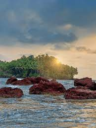
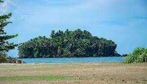
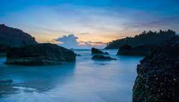

Payyambalam Beach, Baby Beach, Palakkayam Thattu, Vismaya Water Park, Madayipara, Pappinisseri, Aralam Wildlife Sanctuary, Ezhara Beach, Mapilla Bay and many more. Places to visit in Kannur have been an epicentre for tourism in the Indian State of Kerala.
payyalam Beach



The Payyambalam Beach is an impeccably maintained destination in Kannur. This secluded location is known for providing one with the opportunity to simply relax or enjoy a family picnic in absolute tranquillity. Surfing and swimming options are also available for those who seek a little adventure.
Kizhunna Ezhara Beach
Kizhunna Ezhara Beach: 11 km from Kannur, is one of the most secluded beaches in Kerala. Chootad Beach: 27 km from Kannur city and 4.6 km from Pazhayangadi town. It is one of the cleanest beach of Kannur. The Beach park and Ezhimala view point are located at this beach.